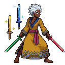

CURRENT RILEY · NEW DRAFT · AWAITING APPROVAL
Fistblade · default heavy punch
For Fistblade attacks without their own special animation. Brief coil → blink-fast drive → heavy punch → recovery. Your GIF inspires the speed and weight, not literal choreography.
Loading…
Locked approved sources

Master identity

Exact Fistblade starting guard
Review only. Approved idles, Four Sword attack, special attacks and live gameplay are unchanged.